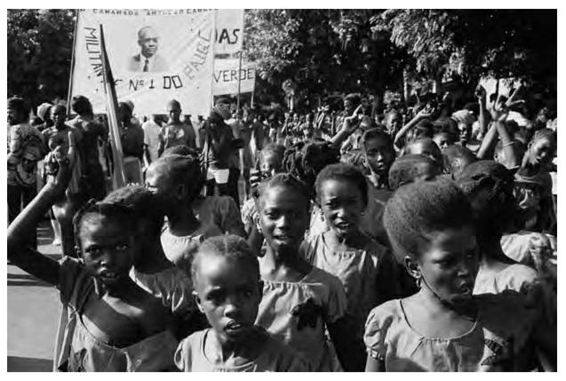

INTRODUCTION
The Third World today faces Europe like a colossal mass whose project should be to try to resolve the problems to which Europe has not been able to find the answers.
—Frantz Fanon,
The Wretched of the Earth, 1961
1
The Third World was not a place. It was a project. During the seemingly interminable battles against colonialism, the peoples of Africa, Asia, and Latin America dreamed of a new world. They longed for dignity above all else, but also the basic necessities of life (land, peace, and freedom). They assembled their grievances and aspirations into various kinds of organizations, where their leadership then formulated a platform of demands. These leaders, whether India’s Jawaharlal Nehru, Egypt’s Gamal Abdel Nasser, Ghana’s Kwame Nkrumah, or Cuba’s Fidel Castro, met at a series of gatherings during the middle decades of the twentieth century. In Bandung (1955), Havana (1966), and elsewhere, these leaders crafted an ideology and a set of institutions to bear the hopes of their populations. The “Third World” comprised these hopes and the institutions produced to carry them forward.
From the rubble of World War II rose a bipolar Cold War that threatened the existence of humanity. Hair-triggers on nuclear weapons alongside heated debates about poverty, inequality, and freedom threatened even those who did not live under the U.S. or Soviet umbrellas. Both sides, as Nehru noted, pelted each other with arguments about peace. Almost unmolested by the devastation of the war, the United States used its advantages to rebuild the two sides of Eurasia and cage in a battered Soviet Union. Phrases like “massive retaliation” and “brinkmanship” provided no comfort to the two-thirds of the world’s people who had only recently won or were on the threshold of winning their independence from colonial rulers.
Guinea-Bissau, September 1974: No Fist Is Big Enough to Hide the Sky. © ALAIN DEJEAN/SYGMA/CORBIS

Thrown between these two major formations, the darker nations amassed as the Third World. Determined people struck out against colonialism to win their freedom. They demanded political equality on the world level. The main institution for this expression was the United Nations. From its inception in 1948, the United Nations played an enormous role for the bulk of the planet. Even if they did not earn permanent seats on the UN Security Council, the new states took advantage of the UN General Assembly to put forward their demands. The Afro-Asian meetings in Bandung and Cairo (1955 and 1961, respectively), the creation of the Non-Aligned Movement in Belgrade (1961), and the Tricontinental Conference in Havana rehearsed the major arguments within the Third World project so that they could take them in a concerted way to the main stage, the United Nations. In addition, the new states pushed the United Nations to create institutional platforms for their Third World agenda: the UN Conference on Trade and Development (UNCTAD) was the most important of these institutions, but it was not the only one. Through these institutions, aspects other than political equality came to the fore: the Third World project included a demand for the redistribution of the world’s resources, a more dignified rate of return for the labor power of their people, and a shared acknowledgment of the heritage of science, technology, and culture.
In Bandung, the host Ahmed Sukarno offered this catechism for the Third World:
Let us not be bitter about the past, but let us keep our eyes firmly on the future. Let us remember that no blessing of God is so sweet as life and liberty. Let us remember that the stature of all mankind is diminished so long as nations or parts of nations are still unfree. Let us remember that the highest purpose of man is the liberation of man from his bonds of fear, his bonds of poverty, the liberation of man from the physical, spiritual and intellectual bonds which have for long stunted the development of humanity’s majority. And let us remember, Sisters and Brothers, that for the sake of all that, we Asians and Africans must be united.
2The idea of the Third World moved millions and created heroes. Some of these were political figures like the three titans (Nasser, Nehru, Sukarno), but also Vietnam’s Nguyen Thi Binh and Ho Chi Minh, Algeria’s Ben Bella, and South Africa’s Nelson Mandela. The project also provided the elements of a new imagination for its cultural workers—people such as the poet Pablo Neruda, the singer Umm Kulthum, and the painter Sudjana Kerton. The horizon produced by the Third World enthused them, along with those who made history in their everyday lives. The Third World project united these discordant comrades.
The Third World project came with a built-in flaw. The fight against the colonial and imperial forces enforced a unity among various political parties and across social classes. Widely popular social movements and political formations won freedom for the new nations, and then took power. Once in power, the unity that had been preserved at all costs became a liability. The working class and the peasantry in many of these movements had acceded to an alliance with the landlords and emergent industrial elites. Once the new nation came into their hands, the people believed, the new state would promote a socialist program. What they got instead was a compromise ideology called Arab Socialism, African Socialism, Sarvodaya, or NASAKOM that combined the promise of equality with the maintenance of social hierarchy. Rather than provide the means to create an entirely new society, these regimes protected the elites among the old social classes while producing the elements of social welfare for the people. Once in power, the old social classes exerted themselves, either through the offices of the military or the victorious people’s party. In many places, the Communists were domesticated, outlawed, or massacred to maintain this discordant unity. In the first few decades of state construction, from the 1940s to the 1970s, consistent pressure from working people, the prestige of the national liberation party, and the planetary consensus over the use of the state to create demand constrained these dominant classes to some extent. They still took charge of the new states, but their desire for untrammeled profit was hampered by lingering patriotism or the type of political and economic regimes established by national liberation.
By the 1970s, the new nations were no longer new. Their failures were legion. Popular demands for land, bread, and peace had been ignored on behalf of the needs of the dominant classes. Internecine warfare, a failure to control the prices of primary commodities, an inability to overcome the suffocation of finance capital, and more led to a crisis in the budgets of much of the Third World. Borrowings from commercial banks could only come if the states agreed to “structural adjustment” packages from the International Monetary Fund (IMF) and the World Bank. The assassination of the Third World led to the desiccation of the capacity of the state to act on behalf of the population, an end to making the case for a new international economic order, and a disavowal of the goals of socialism. Dominant classes that had once been tethered to the Third World agenda now cut loose. They began to see themselves as elites, and not as part of a project—the patriotism of the bottom line overcame obligatory social solidarity. An upshot of this demise of the Third World agenda was the growth of forms of cultural nationalism in the darker nations. Atavisms of all kinds emerged to fill the space once taken up by various forms of socialism. Fundamentalist religion, race, and unreconstructed forms of class power emerged from under the wreckage of the Third World project.
The demise of the Third World has been catastrophic. People across the three continents continue to dream of something better, and many of them are organized into social movements or political parties. Their aspirations have a local voice. Beyond that, their hopes and dreams are unintelligible. During the middle decades of the twentieth century, the Third World agenda bore these beliefs from localities to national capitals and onward to the world stage. The institutions of the Third World amassed these ideas and nailed them to the doors of powerful buildings. The Third World project (the ideology and institutions) enabled the powerless to hold a dialogue with the powerful, and to try to hold them accountable. Today, there is no such vehicle for local dreams. The Darker Nations is written to remind us of that immense labor and its importance.
The account is not exhaustive but illustrative. The Darker Nations makes a broad argument about the nature of the Third World political project, and the causes and consequences of its decline. The world was bettered by the attempt to articulate a Third World agenda. Now it is impoverished for the lack of that motion.